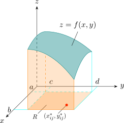
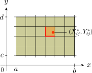
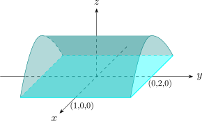

3.1 Volumes and Double Integration
In the same way, consider a function \(f\) of two variables defined on a closed rectangle \[R = [a,b]\times [c,d] = \{(x,y)\in \mathbb {R}^2 \mid a\leq x\leq b,\ c \leq y \leq d\},\] and suppose first that \(f(x,y)\geq 0\).

Let \(S\) be the solid that lies above \(R\) and under the graph of \(f\), \[S = \{(x,y,z)\in \mathbb {R}^3 \mid (x,y)\in R,\ 0\leq z \leq f(x,y)\} .\] The aim is to find the volume of \(S\). Divide \([a,b]\) into \(m\) subintervals of width \(\Delta x\) and \([c,d]\) into \(n\) of width \(\Delta y\). The lines through the division points cut \(R\) into \(mn\) subrectangles \(R_{ij}\), each of area \(\Delta A = \Delta x\,\Delta y\), and in each we choose a sample point \((x^*_{ij},y^*_{ij})\).

The part of \(S\) above \(R_{ij}\) is approximated by a thin rectangular box with base \(R_{ij}\) and height \(f(x^*_{ij},y^*_{ij})\), whose volume is \(f(x^*_{ij},y^*_{ij})\,\Delta A\). Adding, \[V \approx \sum ^m_{i=1}\sum ^n_{j=1}f(x^*_{ij},y^*_{ij})\,\Delta A ,\] a double Riemann sum, and the approximation improves as the rectangles shrink.
Definition 3.1.1. The double integral of \(f\) over the rectangle \(R\) is \[\iint \limits _R f(x,y)\,dA = \lim _{m,n\to \infty }\sum ^m_{i=1}\sum ^n_{j=1} f(x^*_{ij},y^*_{ij})\,\Delta A\] if the limit exists, with the same value for every choice of sample points. If \(f(x,y)\geq 0\), the volume of the solid that lies above \(R\) and below the surface \(z = f(x,y)\) is \[V = \iint \limits _R f(x,y)\, dA .\]
Every continuous function on \(R\) is integrable, and so is every bounded function whose discontinuities lie on finitely many smooth curves. When \(f\) takes both signs, the integral is the volume above the \(xy\)-plane minus the volume below it.
Example 3.1.2. If \(R = \{ (x,y) \mid -1\leq x \leq 1,\ -2\leq y\leq 2\}\), evaluate \[\iint \limits _R \sqrt {1 - x^2}\, dA .\]
Solution. The integrand is non-negative, so the integral is a volume. The surface \(z = \sqrt {1 - x^2}\) satisfies \(x^2 + z^2 = 1\) with \(z\geq 0\), and \(y\) does not appear: it is the upper half of the circular cylinder of radius \(1\) about the \(y\)-axis.

The solid over \(R\) is half of a cylinder of radius \(1\) and length \(4\), so \[\iint \limits _R \sqrt {1 - x^2}\, dA = \frac {1}{2}\,\pi \,(1)^2\,(4) = 2\pi .\]
Example 3.1.3. Estimate the volume of the solid above \(R = [0,2]\times [0,2]\) and below \(z = 16 - x^2 - 2y^2\), using a Riemann sum with four squares and sample points at their upper right corners.
Solution. The squares have \(\Delta A = 1\) and upper right corners \((1,1)\), \((1,2)\), \((2,1)\) and \((2,2)\), where \(f\) is \(13\), \(7\), \(10\) and \(4\). The estimate is \((13 + 7 + 10 + 4)\cdot 1 = 34\). Because \(f\) decreases in both variables, upper right corners give the smallest values and the estimate is too low; the exact value, found in Example 3.2.5, is \(48\).
Example 3.1.4. Use the midpoint rule with four squares to estimate \(\iint _R (x - 3y^2)\,dA\) over \(R = [0,2]\times [1,2]\), divided into four equal rectangles.
Solution. Divide \([0,2]\) into \([0,1]\) and \([1,2]\) and \([1,2]\) into \([1,\frac 32]\) and \([\frac 32,2]\), so \(\Delta A = \frac 12\) and the midpoints are \(x = \frac 12, \frac 32\) and \(y = \frac 54, \frac 74\). Then \[\sum f(\bar x_i,\bar y_j)\,\Delta A = \frac 12\left [\left (\tfrac 12 - \tfrac {75}{16}\right ) + \left (\tfrac 12 - \tfrac {147}{16}\right ) + \left (\tfrac 32 - \tfrac {75}{16}\right ) + \left (\tfrac 32 - \tfrac {147}{16}\right )\right ] = -\frac {95}{8} = -11.875 .\] The exact value, found in Example 3.2.3, is \(-12\).
Questions on this section
Stuck on something here? Ask below and it stays attached to this topic.